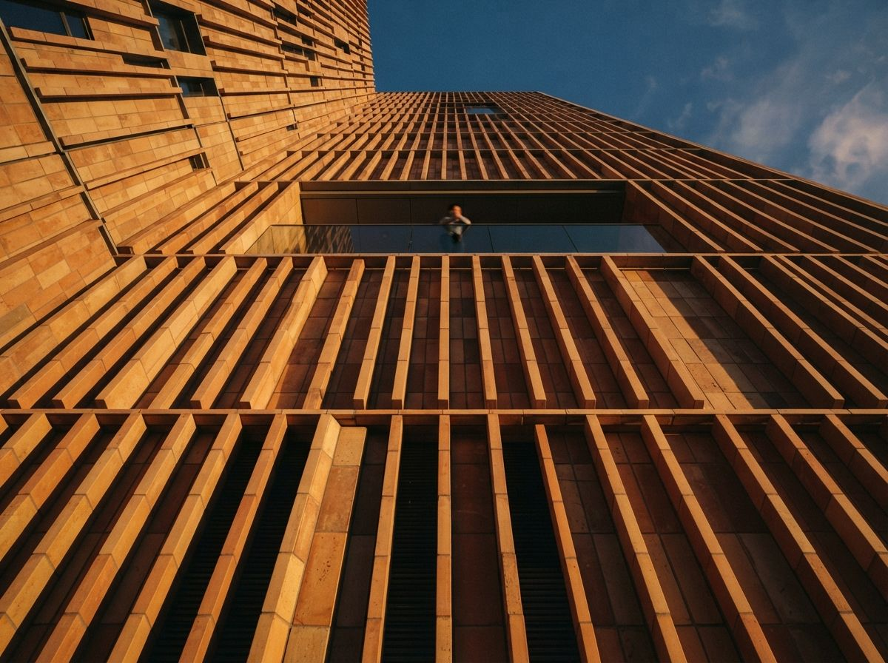
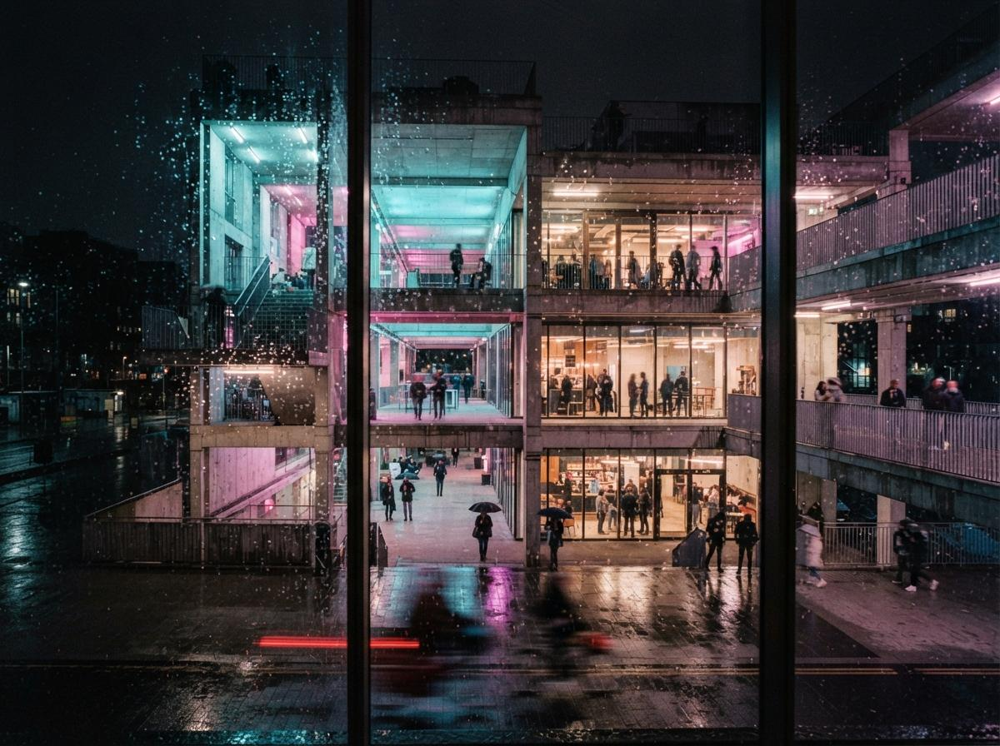

Nobody plans a firm's tool mix on purpose. It accretes. One associate learned Veras on a previous job and never switched. Another discovered ComfyUI during a slow week and now swears by the control. A third only trusts Midjourney's finishing pass to make a flat AI render look like a photograph. Each of them is right about their own tool. None of them is thinking about the render three desks over, and the client only ever sees the whole set at once.
This is not a licensing problem or a workflow-speed problem, both of which this publication has covered at length. It is a house-style problem, and it shows up exactly where it is most expensive to fix: at the deadline, when someone flattens twelve renders from three pipelines into one PDF and notices, too late to reshoot, that the building looks like it changes size of window and color of sky depending which page you are on.

What actually leaks between tools, and what doesn't
Not every inconsistency is worth chasing. Geometry is not the risk, since every mainstream AI renderer in an architecture pipeline is working from the same 3D model or the same base image, so massing and proportion hold regardless of which tool interprets them. The risk sits entirely in the parts of a render that are invented rather than modeled: light, atmosphere, material read, and the population of a scene, cars, trees, people, that no CAD file specifies.
- Light direction and time of day. Veras defaults toward a bright, neutral midday unless told otherwise. ComfyUI pipelines built around a specific checkpoint often carry that checkpoint's lighting bias, frequently a warmer, lower sun. Midjourney, prompted loosely, tends toward whatever reads as most dramatic. Three renders of the same building, three different suns.
- Material and color temperature. The same glazing spec renders blue-grey in one tool's default color science and warm-neutral in another. Concrete goes cool in one, sandy in another. Nobody chose this; it is each model's training bias surfacing through a generic prompt.
- Entourage density and style. How many cars, how many trees, how stylized the people. A ComfyUI pipeline with a sparse control setup tends to under-populate a scene. Midjourney tends to over-populate it with figures that read as stock photography rather than a specific street.
- Post-processing signature. Contrast curve, vignette, grain. This is the one variable that is not a model bias at all, it is a habit, and it is the easiest of the four to standardize because it happens after generation, in a tool everyone already shares.
Why a prompt library alone does not solve this
A shared prompt library, house style block, negative list, seed conventions, is the right tool for keeping one person's output consistent with their own past work, and it is worth building for that reason alone. It does less than firms expect for the multi-tool problem, because the same house-style text produces a different result in each engine. "Warm afternoon light, muted palette, sparse entourage" is not a setting, it is a suggestion, and each model takes the suggestion differently. The library standardizes the ask. It does not standardize the answer.
Reference images close some of that gap, since Veras, Midjourney and ComfyUI's IPAdapter all accept them, and a shared reference board of approved light, palette and entourage examples travels across tools better than text does. It still is not a guarantee. A reference steers a render toward a look; it does not lock it there, and three people interpreting the same reference through three different tools will still land in three different places, just closer together than they started.

The pass that actually closes the gap
The firms that keep a multi-tool deliverable set looking coherent are not the ones with the strictest prompt discipline. They are the ones who stopped trying to solve consistency at generation time and moved it to a mandatory finishing pass instead. Every render, regardless of source tool, runs through the same color grade, the same contrast curve, the same crop and export preset, in whatever compositing tool the firm already uses for that job. That single shared step absorbs most of the light-and-material drift for free, because a unified grade pulls a cool render and a warm render toward the same middle.
What a finishing pass cannot fix is entourage mismatch, since you cannot color-grade away a scene that has four cars in one render and none in the next. That has to be caught earlier, at a review stage where someone is looking at the whole set side by side, not each render against its own brief. The fix is procedural, not technical: before a set goes out, lay every render in the deliverable at the same size on one screen, in the order the client will see them, and only then decide if it reads as one building.
Consistency is not a setting on the model. It is the last hour of work nobody put on the schedule.
This only works if one person has the authority to send a render back. Most firms route AI renders through the same review chain as everything else, whoever is closest to the deadline signs off on their own work, which is exactly why inconsistency survives to delivery. A set built from three tools needs one named reviewer whose job is comparing renders to each other, not each render to its own brief. That person does not need to touch any of the three tools. They need the full set open at once and the authority to say the third render does not belong with the other eleven.
A short checklist before a mixed-tool set ships
Pick one reference image for light and palette, and require every renderer, regardless of tool, to be shown it before generating. Route every finished render through one shared color grade and export preset, no exceptions for the person who is "just going to send it as-is." Set an entourage budget per render, a rough car and figure count, so density does not drift by whoever generated the image. Name one reviewer whose job is the set as a whole, not each render on its own. Before delivery, lay the full set out together at final size and look at it as a client would, not one render at a time.
Our take
The industry's attention on AI rendering has gone almost entirely to the generation step, which tool, which model, which prompt. The step that actually determines whether a deliverable set reads as professional is the one after generation, where nobody is watching, because it feels like housekeeping rather than craft. It is craft. A single render is a technical exercise. A coherent set of twelve, from three tools, on one deadline, is the actual job, and it is won or lost in the finishing pass, not the prompt box.
Sourced from the 9 August 2026 intel sweep's coverage of multi-tool AI render workflows, and from house-style discipline observed across current archviz pipelines. General practice guidance, not a substitute for testing against your own firm's tool stack.